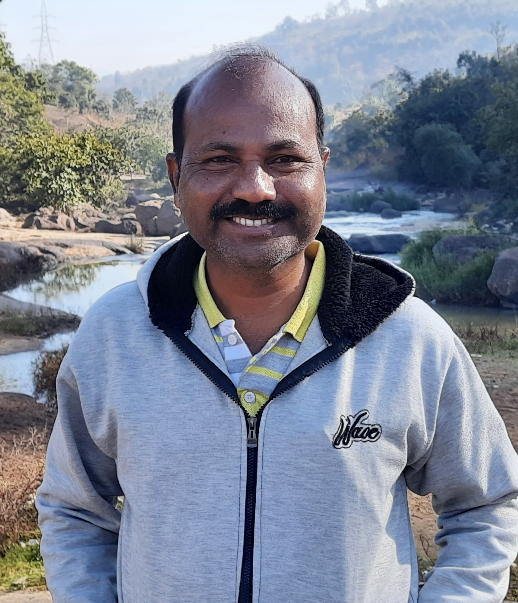

Welcome to Vasudhaiva Kutumbakam (For a Better World)
About Us:
Vasudhaiva Kutumbakam is a non-governmental organization (NGO) committed to fostering unity, compassion, and sustainable development on a global scale. Our name, Vasudhaiva Kutumbakam, stems from the ancient Sanskrit phrase, which translates to "The world is one family." We strongly believe in the power of collaboration, empathy, and collective action to bring positive change and make the world a better place for everyone.
Our Founder:
VK Vasachari, a former sergeant in the Indian Air Force, brings his dedication and values from military service to his role as the founder of Vasudhaiva Kutumbakam. With a background rooted in discipline and service.
His journey is a testament to the values cultivated during his service: discipline, dedication, and a passion for creating a harmonious world. Guided by these principles, he has redefined his role to one of promoting understanding and cooperation, exemplifying that the ties that bind us are stronger than any differences.
Through his leadership, Vasudhaiva Kutumbakam has emerged as a catalyst for positive transformation. VK Vasachari's journey showcases the potential of an individual's unwavering determination to bridge divides and embrace a shared human connection. While embracing his new mission, VK Vasachari remains committed to Philanthropic Efforts , continuing to serve society in impactful ways.
Ideology:
This universe is full of happiness. These rivers, plants and all natural elements are created for our happiness. Every creature in this universe is entitled to be happy (sarvejana sukhino bhavanthu). Every creature is unique. May be some are small, are big. Some walk, some crawl, some fly, some swim. Their physical appearance and strengths or weaknesses are different. Yet, In mother earths view every creature has same importance. Its only We human beings treat every creature differently. We see everything in our point of view. Due to our greed, selfishness We are spoiling the nature and also becoming cause for extinction of some creatures which is in turn becoming a point of concern for environmental imbalance. We must reduce our greed and cultivate the habbit of giving. Our selfishness is not allowing us to share or give. If We start enjoying "GIVING" the world will change drastically n wonderfully. Elders say if you share HAPPINESS it will INCREASE IN MULTIPLE, if you share sorrow it reduces to half".
Main Objective: To bring an amicable "CHANGE" in the society. For building of a HAPPY AND BETTER world.
Soul of Vasudhaiva Kutumbakam,
1. To create a world in which every creature is HAPPY.
2. Every creature is entitled for every natural resource.
3. To bring awareness to all people that every human being has something to give viz money, power, labour or time.
To bring an amicable change in Society & to create a Happy World, We have following objectives.
Objectives of Vasudhaiva Kutumbakam..
Vasudhaiva Kutumbakam works for a society where ..
1. Surplus natural resources available to all creatures.
2. Where peoples development measured in Happiness of people.
3. Where there is no necessity of Reservation system or no need of corruption.
4. Where people share difficulties of others n help them without expecting anything in return.
5. Where people happy n believe in "GIVING".
For fulfilling these objectives We follow 4 ways.
1. Network
2. Tripple I Effect (Idea Information & Implimentation)
3. SEVA (Socio Environmental Visionary Activities)
4. Sikshana (Jagruthi)
Services:
Follow our social media handles to know about our services.
We invite you to join our global family and be part of the change. There are numerous ways to contribute – from volunteering your time and expertise to making donations that directly impact the lives of those in need. Together, we can build a world where compassion, empathy, and sustainability flourish.
Join us in making a difference! Together, we are Vasudhaiva Kutumbakam - One World, One Family.
we embody the ancient wisdom of "The World is One Family." Your contribution here is more than just a donation; it's an investment in a world where compassion knows no boundaries. Why Your Donation Matters When you donate to Vasudhaiva Kutumbakam, you're actively participating in fostering cross-cultural connections, promoting education, and providing essential resources to underserved communities.
Contact us on E-mail: vkfbw2019@gmail.com
Click Here